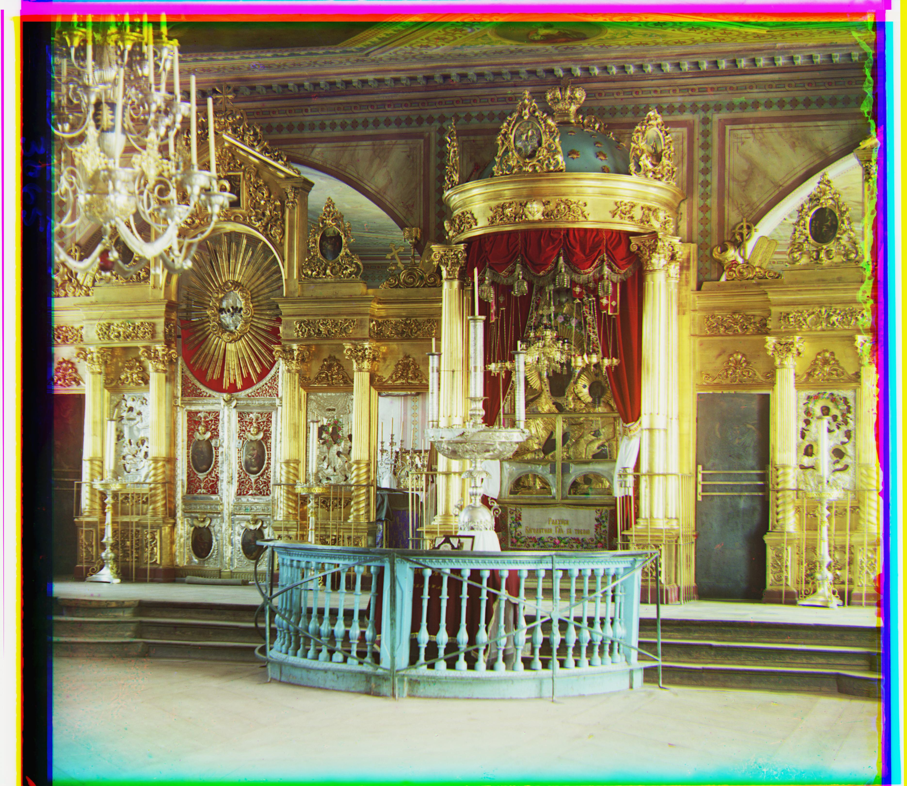
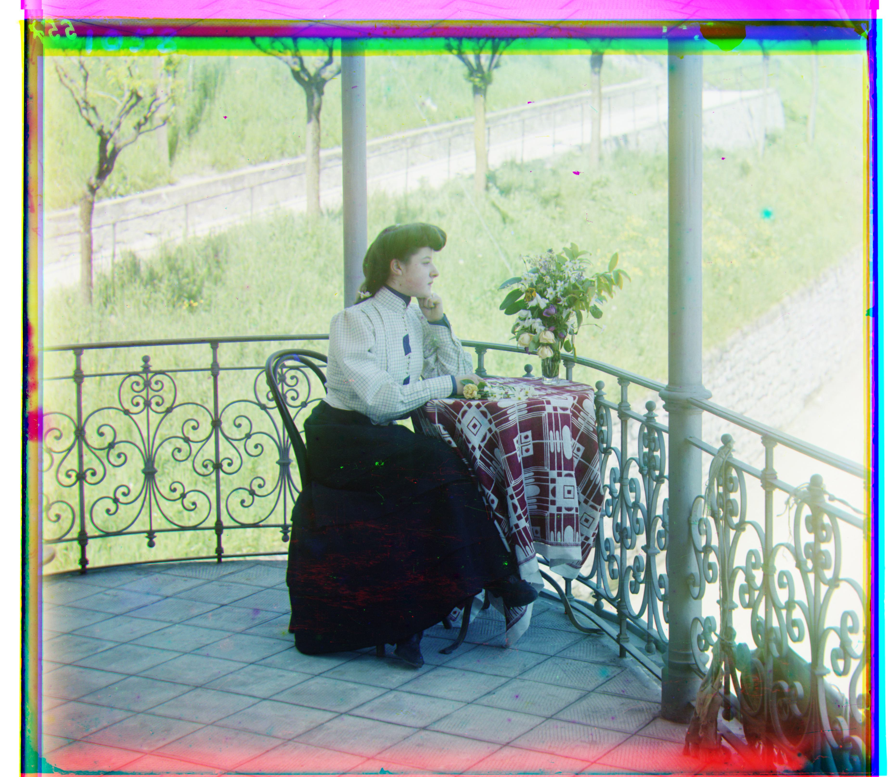
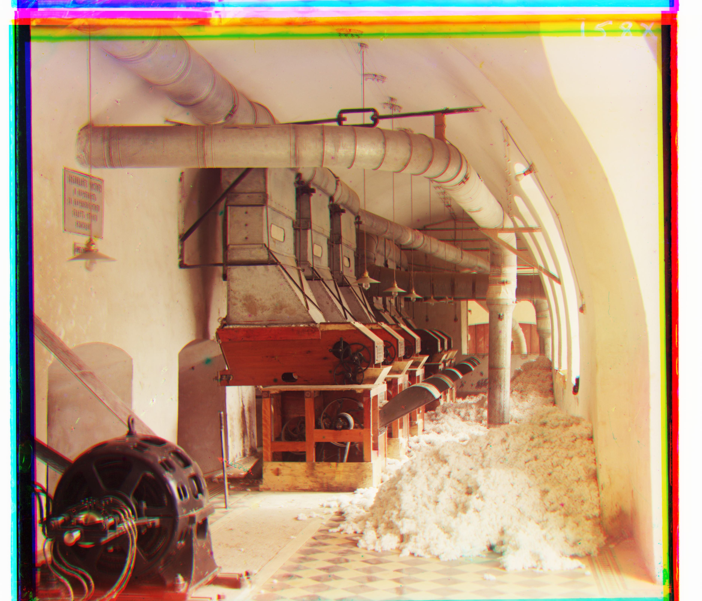
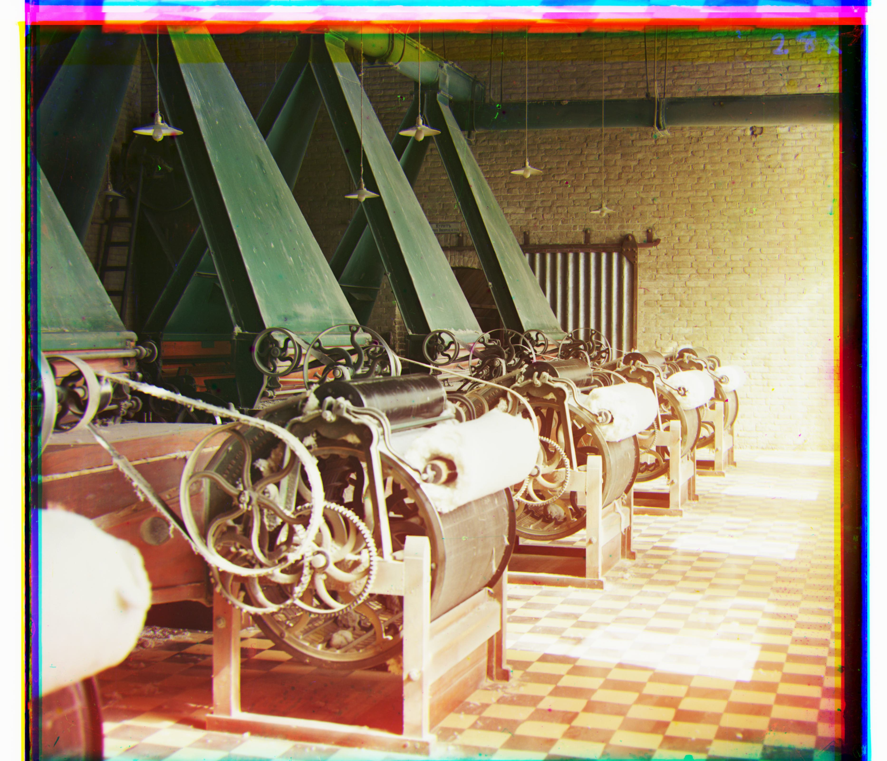

Since elementary school, we’ve learned that a small set of primary colors can combine to produce the full spectrum of visible colors. Before color photography existed, images were captured in black and white. However, the same scene could be recorded at different intensities of red, green, and blue light. Photographer Sergei Prokudin-Gorskii took advantage of this by capturing three separate exposures, one for each RGB channel, allowing us to reconstruct fully colored photographs.
After dissecting the original image to get the three color channels, I first dealt with smaller images. I created a sliding window approach using the blue channel as a reference for both red and green. By comparing sections of the blue channel with windows on the R/G channels, the alignment with the lowest loss or highest similarity was selected. This works because regions with high intensity in one channel generally correspond to high intensity in the others.
Initially, I used the Euclidean difference (L2 norm) between pixels to evaluate alignment. Later, I used the normalized cross-correlation (NCC) norm, which improved results for smaller images. The search window was initially large (-40 to 40 px), but recursion allowed smaller search ranges (-15 to 15 px or even -4 to 4 px) for efficiency. Cropping borders further reduced misalignment due to edge artifacts.
The one-pass brute-force method was too slow for large images. Using an image pyramid (downscale by 0.5, upscale by 2), I aligned a smaller version first, then refined the alignment recursively at higher resolutions. A challenge was handling odd dimensions during rescaling; pixels could get truncated, so I returned shift values rather than rescaled images to maintain consistency.
Some images, like emir.tif, required larger shifts, possibly due to camera angle or differences in channel sensitivity, especially in blue. I also experimented with Sobel edge detection to align based on edges, then applied the calculated shifts to the actual RGB channels.
Recursion worked well, though index bounds were sometimes tricky. I also explored additional images of cotton mills, which relate to my family history in the textile industry. Seeing the machinary in these photographs connects to the era my grandfather worked in and how the textile industry shaped our family's journey.
| Image | Filename | Red Offset (y, x) | Green Offset (y, x) |
|---|---|---|---|
|
cathedral.jpg | (3, 12) | (2, 5) |
|
monastery.jpg | (2, 3) | (2, -3) |
|
tobolsk.jpg | (3, 6) | (2, 3) |
|
church.tif | (-4, 58) | (4, 25) |
|
emir.tif | (40, 107) | (24, 49) |
| harvesters.tif | (11, 125) | (18, 60) | |
|  | icon.tif | (23, 89) | (16, 40) |
|  | italil.tif | (36, 78) | (22, 39) |
| lastochikino.tif | (-8, 75) | (-2, -3) | |
| melons.tif | (12, 176) | (10, 80) | |
| self_portrait.tif | (37, 175) | (30, 80) | |
|
siren.tif | (-24, 96) | (-6, 49) |
| three_generations.tif | (8, 110) | (12, 54) | |
| mill1.tif | (na) | (na) | |
|  | mill2.tif | (na) | (na) |
| mill3.tif | (na) | (na) | |
|  | mill4.tif | (na) | (na) |